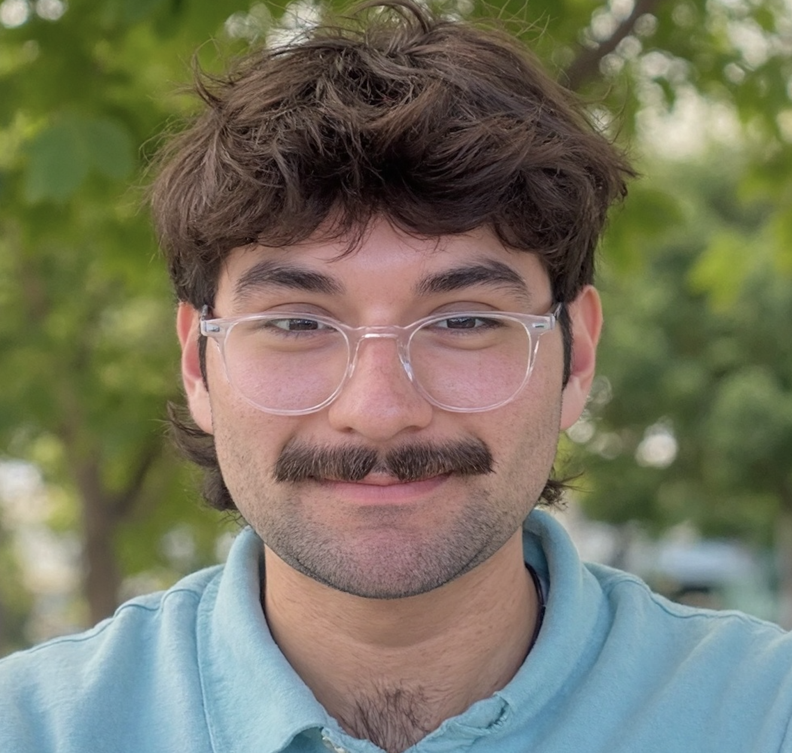

click to upload
headshot JPG, PNG supported
headshot JPG, PNG supported

James Benavides
𓆼 ⋆.˙Environmental Scientist.˙ 𓆼
interested in marine ecosystems, land stewardship, and environmental education

interested in marine ecosystems, land stewardship, and environmental education
Where I've been. What I do. Where I want to go!
Howdy! I'm James Benavides.
I grew up on the Gulf of Mexico, where my love for the natural world began. Exploring coastal ecosystems, collecting shells on the beach, and observing the incredible diversity of marine life sparked a fascination with biology that eventually led me to earn a degree in it.
My passion for the environment has taken me from Texas -> Maine -> North Carolina -> Denmark and most recently, Iowa. Along the way, I have developed research projects focused on oyster aquaculture, sea star ecology, and scallop behavior.
But science doesn't stop in the lab. My experiences in the field have been just as important. Working in coastal fisheries in Texas strengthened my skills in boat operation and fisheries sampling techniques, while land stewardship in Iowa has given me hands-on experience with equipment such as chainsaws, trenchers, and mowers.
Community is at the heart of everything I do. Whether I'm designing research projects that address community needs or leading environmental education programs for students and adults, I believe that meaningful work should benefit both people and the environment.
Currently, I am serving an 11-month AmeriCorps term at Whiterock Conservancy in Coon Rapids, Iowa. And I'm loving the midwest!
Outside of work, I'm always looking to improve my birding and fishing skills. Birds I can watch, fish I can eat - what more could you ask for?
Welcome to my page! 𓆼
Tools, techniques, and field methods for land stewardship, coastal fisheries, and marine research.
This work involves assessing a habitat and deciding what is best for that space, usually resulting in timber stand improvement and/or invasive species removal.
For example, tackling invasive honeysuckle has been a large part of my work, but deciding to foliar spray vs. hack-and-squirt really depends on the time of year and what species surround the invasives. Taking down trees that appear healthy but are too dense also requires an understanding of spacing that roughly separates a savanna from a woodland.
I was part of burn operations from planning through active ignition and post-burn assessment. These burns require strong communication - fire is an effective tool, but safety is always the top priority.
In my first year of burning in 2026, I burned over 500 acres of land! I've completed my L-180 and S-130 certifications, and my S-190 is currently in progress.
These field days solidified my ability to prepare thoroughly - you don't want to be two hours into a site and realize you forgot pencils or left a device uncharged.
I worked with oyster data collection, studied benthic biofouling, scanned for derelict crab traps using sonar, assessed juvenile fish populations, and worked with larger fish (including sharks) in offshore settings.
My work has spanned microbe isolation, oyster aquaculture, and animal behavior. When developing a project, literature reviews are essential - I rely on Zotero to stay organized. I've also built strong habits around experimental logs and data records, which form the backbone of the SOPs and protocols I produce.
Data has been collected and processed in RStudio, Excel, and ArcGIS. Diagrams, graphs, and images are my best friend.
Learn more about my work through interviews, articles, and spotlights of my work!
One of my goals this year is to write more articles - stay tuned!!
Connecting communities to conservation through programs, surveys, and outreach.
Adapting to different age groups is a great - and fun - challenge. I've taken the same lesson and delivered it to a group of 9th graders immediately after finishing with a group of 3rd graders, which requires real flexibility in how you frame concepts and hold attention.
I also developed and delivered an educational field program on harmful algal blooms for Texas Master Naturalists, complete with live water quality sampling demonstrations and instruction on HAB identification and proper response protocols.
We recorded species, size, and catch numbers, which made for great practice in identification and handling of larger fish. The surveys also gave us a window into which fish populations are anglers targeting and catching.
Being kind, approachable, and genuinely curious about someone's day consistently produced the best data. Good conversation and good science aren't mutually exclusive.
Good tabling means knowing your material, reading your crowd, and adjusting accordingly - whether you're talking to college students or families with young kids.
Enthusiasm is contagious. Kindness makes people stop and stay. Those two things make for a great day of outreach.